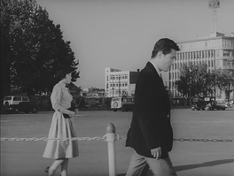

4오발탄
Aimless Bullet (Obaltan)!

제작연도 1961
감독 유현목
장르 드라마
출연 김진규, 최무룡, 서애자,
김혜정, 노재신
김혜정, 노재신
상영시간 1시간 47분
키워드 사회, 한국소설원작
!
계리사 사무소 서기인 철호(김진규)는 전쟁통에 미쳐 “가자!”를 외치는 어머니(노재신), 영양실조에 걸린 만삭의 아내(문정숙)와 어린 딸, 양공주가 된 여동생 명숙(서애자), 실업자인 퇴역군인 동생 영호(최무룡), 학업을 포기하고 신문팔이에 나선 막내 동생 민호를 거느린 한 집안의 가장이다. 그러나 계리사의 월급으로는 한 가족을 먹여 살리기도 빠듯해, 철호는 치통을 앓으면서도 치과에 갈 엄두를 못 낸다. 영호는 비관적인 현실을 타개하기 위하여 은행 강도를 저지르지만 실패한다. 철호는 경찰로부터 영호가 은행을 털다 붙잡혔다는 전화를 받는다. 영호를 면회하고 집으로 돌아온 철호는 아내가 아이를 낳으려고 한다는 소식을 듣고 병원으로 가지만 아내는 숨을 거둔 뒤다. 잇따른 불행에 좌절한 철호는 아내의 시신을 보지도 않고 병원을 나와 길거리를 방황하다 치과에 들러 이를 뺀다. 발치에 따른 출혈과 고통으로 몸을 제대로 가누지 못하는 철호는 택시에 올라타 무기력하게 “가자”고 중얼거린다.